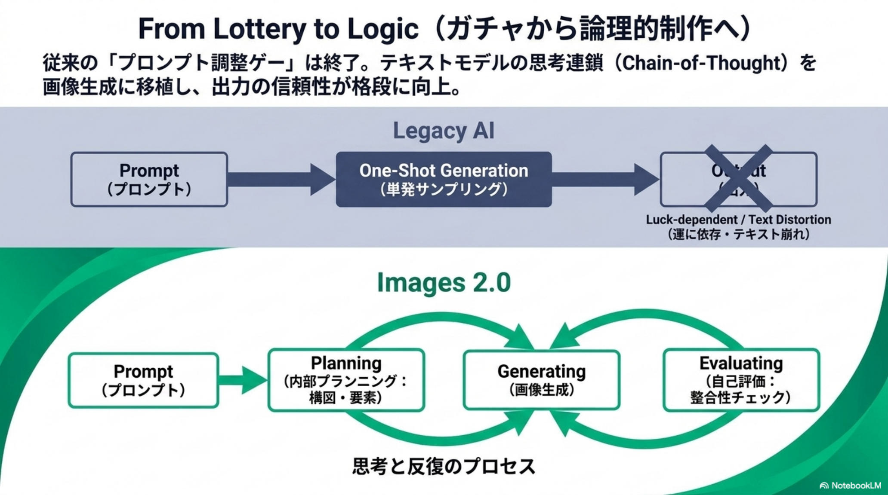
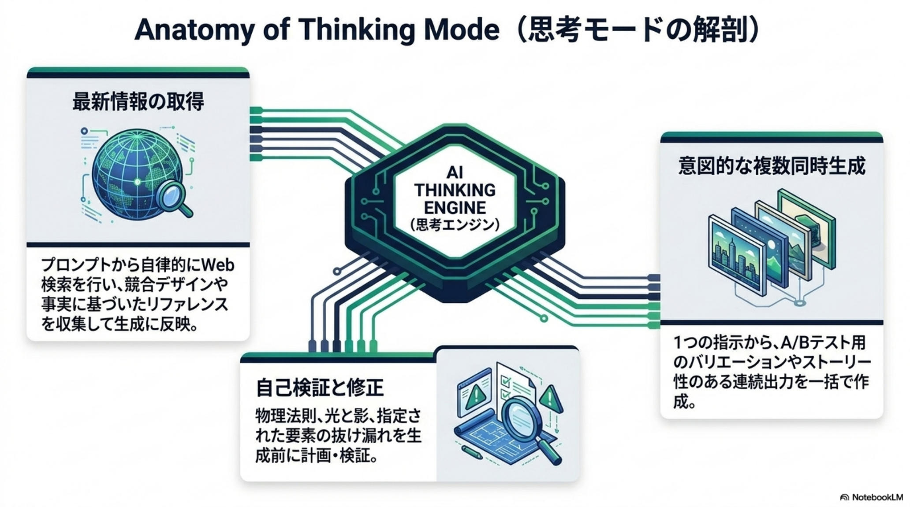
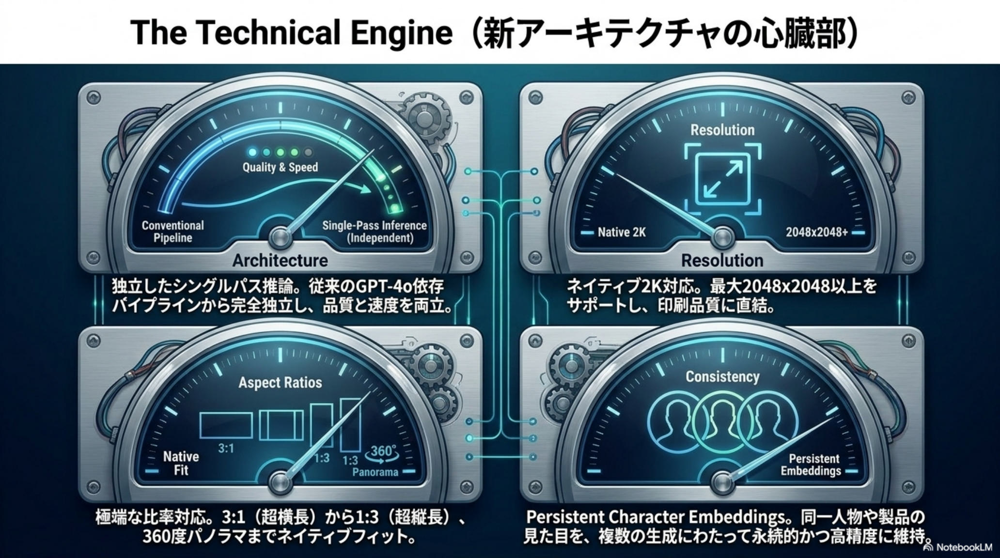
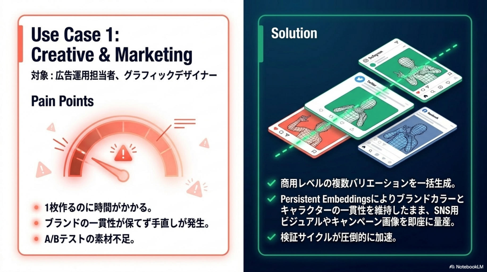
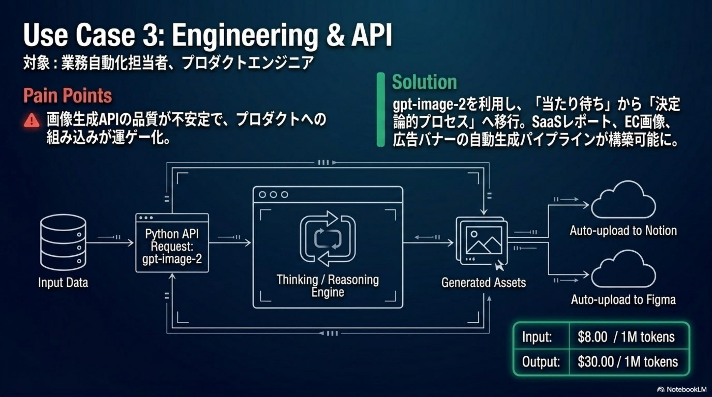

ChatGPT Images 2.0
model:gpt-image-2
「ガチャ」から、
視覚的思考パートナーへ。
Thinking Mode × 日本語 99%+ × 永続キャラ。
画像生成はついに「業務フローに組み込める実用ツール」へ。
OpenAI が発表した ChatGPT Images 2.0（gpt-image-2） は、単なる画質向上ではなく、アーキテクチャと生成プロセスそのもののパラダイムシフトだ。最大の突破口は 「Thinking Mode（思考機能）」——o3 系の推論モデルとネイティブ連携し、構図・物理法則の計画（Chain-of-Thought）・Web 検索・複数候補の同時生成・自己評価/修正のループを備える。弱点だった日本語テキストは99%以上の精度で描画され、1ページ級の高密度日本語も実用レベル。GPT-4o パイプラインから独立した専用シングルパス・アーキテクチャで品質と速度を両立し、永続キャラクター埋込（PCE）やネイティブ4K／360°出力で、画像生成はついに「遊び」から「業務ツール」へ跳ねる。

「運任せのガチャ」から論理的な制作へ
これまでの画像生成は、プロンプトを調整しては「当たり」が引けるまでリロードする運ゲーだった。Images 2.0 はテキストモデルの思考連鎖（Chain-of-Thought）を画像生成に移植し、Prompt → Planning → Generating → Evaluating の反復プロセスに変えた。結果は格段に信頼でき、予測可能で、業務に組み込める。

従来の画像モデル
- プロンプト1発のサンプリング（ガチャ）
- テキスト（特に日本語・CJK）は崩れる前提
- 構図・物理法則・光影は運次第
- GPT-4o パイプライン依存で速度・品質に上限
- キャラ一貫性は試行錯誤のプロンプト地獄
gpt-image-2 の設計
- Plan → Generate → Evaluate の反復制作
- 日本語含むテキストを 99%+ で描画
- Web 検索をネイティブ呼出し事実ベースで生成
- 専用独立モデルでシングルパス推論、速度と品質を両立
- Persistent Character Embedding で一貫性を担保
最大のブレークスルー——Thinking Mode の解剖
Images 2.0 の中核は、o3 系の推論モデルと画像生成のネイティブ連携にある。プロンプトから自律的に Web 検索を行って参照を収集し、物理法則・光影・要素の整合性を生成前に計画・検証、意図的に複数案を同時生成して A/B 検討を可能にする。これは従来の「画像モデル」という枠を越え、視覚的思考パートナーに近い。

Sam Altman — 「GPT-3 から GPT-5 への飛躍に等しい」
単なる画像モデルのバージョンアップではなく、テキスト側の Chain-of-Thought を画像側に移植した出来事。推論モデルが先端で担保され始めた「思考 → 生成 → 検証」のループは、今後すべての生成系モダリティに波及していく——Images 2.0 はその最初の実装例となる。
Thinking 以外の4 つの進化——地味だが決定的
Thinking Mode と並んで、実務での使い勝手を底上げする4 つの技術更新が同時に入った。これらが揃って初めて「業務ツール」として成立する。
Text 99%+ CJK
日本語・中国語・韓国語（CJK）を含む高密度テキストを 99%+ で描画。1 ページ級の日本語資料・ポスター・UI が実用レベルで出力できる。
Dedicated Architecture
GPT-4o パイプラインから独立した専用モデルへ完全移行。シングルパス推論で品質と速度を両立、API コストも安定化。
PCE Persistent
Persistent Character Embeddings により、同じ人物・製品を複数シーンで一貫保持。4コマ漫画・ストーリーボード・EC 商品画像が破綻しない。
4K & Aspect
ネイティブ4K（2K/4K 系）出力対応。3:1〜1:3 の極端な比率や 360° パノラマまでワンショットで生成できる。

競合との立ち位置——総合力と思考機能で優位
芸術性の頂点は依然 Midjourney、テキストの絶対王者は Ideogram、開発者コスパなら Flux、Workspace 連携なら Google——それぞれの強みは残る。だが「実務的な総合力」と「思考機能」の両立では、Images 2.0 が現時点でリードしている。
| 項目 | 競合モデル | ChatGPT Images 2.0 |
|---|---|---|
| vs Midjourney V7/V8 | 芸術的「雰囲気」「絵画的美」は Midjourney が最強 | テキスト描画・指示追従・複数同時生成で大きく勝る |
| vs Ideogram 3.0 | テキスト描画の王者として長年トップ | 多言語（特に日本語）・高密度レイアウトで並ぶ〜逆転 |
| vs Flux 2 / Pro | プロンプト忠実度・写実性・開発コスパが強み | Web 検索・推論など「エージェント的機能」で差別化 |
| vs Imagen 4 / Nano Banana Pro | Gemini 推論機能統合で強力なライバル | 早期比較テストで優勢との声、特に日本語 UI で有利 |
| エージェント的機能 | 未搭載 or 限定的（Imagen 4 系のみ統合） | Web 検索 + 自己評価 + 複数候補を標準装備 |
| 日本語テキスト | Ideogram 以外は 30〜80% 程度、歪み多発 | 99%+ で 1 ページ級の高密度も可能 |
そのまま業務フローに組み込める実用ツール
「Thinking Mode」と「日本語精度 99%+」により、画像生成はプレイから業務の定常プロセスへ昇華した。資料作成・広告運用・プロダクト開発の現場で、何がどう変わるか——代表 4 シーンで俯瞰する。
ビジネス・マーケ資料——即時にコンサル品質
「製品 X の市場分析をまとめたプロ品質の日本語インフォグラフィックを作成して」の 1 行で、見出し・比較表・注釈まで正確な日本語で配置されたスライド画像やポスターが完成。資料作成が分単位に短縮される。
広告クリエイティブ・EC 商品画像——量産 × A/B テスト
ブランドカラーと商品形状の一貫性を維持しつつ、日本語キャッチコピーが明瞭に入ったLP ヒーロー画像・広告バナーを複数パターン同時生成。出力した瞬間に A/B テストへ回せるので、検証サイクルが劇的に速くなる。
キャラ／UI プロトタイピング——一貫性の呪縛から解放
PCE（Persistent Character Embeddings）により、4 コマ漫画・ストーリーボード・UI モックアップを通しでキャラ崩壊なく生成。企画段階のビジュアル検討が「叩き台から決定案へ」1 日で到達する。
プロダクト組込——決定論的パイプライン
gpt-image-2 API 経由で「当たりを引くまで待つ」運ゲーから推論 → 複数案生成 → 部分修正の決定論的プロセスへ移行。SaaS の自動レポート・EC の商品画像自動生成が安定運用できる水準に到達。


採用前に押さえる注意点
強力な分、リスクも比例して大きい。著作権・倫理・セキュリティの 3 領域で運用設計が求められる。導入は「監査可能な領域から段階的に」が基本。
留意すべき点
- 学習データ由来の著作権リスクは依然として残存
- PCE によるディープフェイクリスクが新たに発生
- Web 検索連携は時点依存——生成時刻の記録が必須
- ネイティブ 4K は API コストも比例——予算設計が重要
- 芸術性は依然 Midjourney が優位。適材適所で使い分け
推奨アプローチ
- まず社内資料・A/B テスト素材で Images 2.0 を試す
- EC 商品画像・SaaS レポートなど定型業務から段階投入
- 広告・マーケ素材は法務レビュー付きでワークフロー化
- 芸術性が求められる領域は Midjourney と併用継続
- API 採用時は生成時刻・使用モデル・プロンプトをログ化
これは GPT-3 から GPT-5 への飛躍に等しい。画像生成が「遊び」から「業務ツール」へ昇華した日。— Sam Altman · 2026-04-22